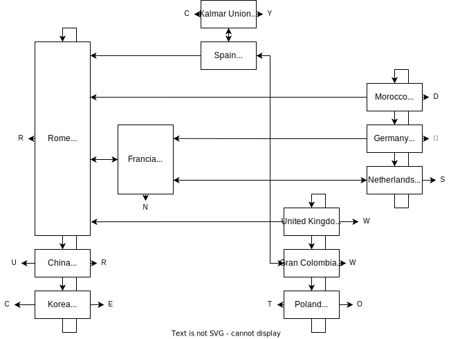

Solution Three
Answer DEUTSCHE MARK
Written by Alan Huang
We can enter things in the answer submission box. If we enter a correct answer, we get a different question or a letter.
There are exactly three accepted answers for the country in the United Kingdom: England, Ireland, and Scotland. This is not accurate today, but it was true for a certain period of history. All of the questions in the puzzle follow this pattern. They fall into the following three groups, although completely understanding the structure is not necessary to solve the puzzle, as long as we can discover answers by combining research with trial and error.
- If the question just reads “the country in,” then it refers to a single country made of three constituent parts. It is considered to begin when the united country is declared and end when one of the parts becomes independent.
- If the question reads “the country in what used to be,” then it refers to a period when a formerly united country is considered to be split into three parts.
- If the question reads “the country in what will be,” then it refers to a period when three countries exist prior to their unification into a single state. (Some countries fall into both of these categories, but are phrased as one or the other.)
The graph of questions is shown below. Of the three answers to each question, the first in alphabetical order always takes us to a country earlier in history that significantly overlapped in territory. The last in alphabetical order takes us to a country later in history that significantly overlapped in territory. The middle answer takes us to a country elsewhere in the world that overlapped in time. These transitions are indicated by the arrows that are shown when we navigate between questions, which match the directions in the diagram.

When we enter an answer but there’s no available destination in the corresponding direction, we receive a letter instead. Aside from Francia, we can then associate each “earlier” letter with the beginning of the time period, and each “later” letter with the end.
As an example, the answers for the United Kingdom are England, Ireland, and Scotland. Since England is the alphabetically earliest, it brings us to an earlier country on the same territory, namely the Roman Empire. The middle answer, Ireland, brings us to Gran Colombia, which existed concurrently with the United Kingdom. Scotland has no later country to move to, so it gives us W, and we should associate this with the end of the time period, which is 1922.
When we reach West Germany, we are also presented with a schematic version of the diagram:

The diagram indicates that where we currently are is important, and that we only care about the relative ordering of dates, not exact years. If we read all the letters in chronological order, we get CURRENCY TWO WDS. We therefore want the currency of West Germany, the DEUTSCHE MARK.
Author’s Notes
I wanted to write a puzzle about history, as I think this area of social studies is often neglected in puzzling compared to (say) geography or linguistics. Unfortunately, there is of course a reason for this: history is messy and inexact, and it’s hard to find data that both lines up with what you need and is something historians actually agree on.
Regardless, even if you didn’t have that much fun, I hope at least you learned something new.
Gallia est omnis divisa in partes tres...
Appendix: Notes on countries
There is often some wiggle room in interpretation, but the goal is for the puzzle to provide enough information to communicate the intent.
- Rome (two wds)
- The time period used is the interval where the Gallic Empire and Palmyrene Empire had seceded from the Roman Empire, for a few years around 270 AD during the Crisis of the Third Century.
- China (one wd)
- While many smaller states existed at various points concurrently, both China and Korea have a standard set of Three Kingdoms, in this case Wei, Han (Shu is also accepted), and Wu (which are sometimes given two-character names to disambiguate them). There is some fudging here: in order to overlap with Rome, China needs to be extended to the end of the “Three Kingdoms period,” by which time there had already only been two kingdoms for several years.
- Korea (one wd)
- The time period is considered to end when Silla conquers the other states of Baekje and Goguryeo in the 660s AD.
- Francia (two wds)
- The time period used is from the Treaty of Verdun in 843, which divided the Frankish or Carolingian Empire into West Francia, Middle Francia, and East Francia, to the partition of Middle Francia soon afterward.
- Kalmar Union (one wd)
- The Kalmar Union combined Denmark, Sweden, and Norway, along with their possessions including Finland, Greenland, and Iceland. While they also included a few islands that are today Scottish, these are not treated as a substantial territorial overlap. The time period is considered to end when Sweden leaves the union in 1523.
- Spain (one wd)
- This is a slightly awkward case. The narrow interval in the diagram above spans from the fall of Granada at the end of the Reconquista, which left the crowns of Castile, Aragon, and Navarre covering all of mainland Spain, to the absorption of Navarre in the 1510s. However, Castile and Aragon were already in personal union, which ought to count as one by analogy with the Kalmar Union. Since Spain doesn’t give any letters, though, it could perhaps safely be interpreted as beginning with the establishment of the personal union in 1469 or ending with the later official merging of Castile and Aragon after the War of the Spanish Succession, without affecting extraction.
- United Kingdom
- The United Kingdom of Great Britain and Ireland only came into existence with the Acts of Union 1800 incorporating Ireland; prior to this England and Scotland formed the Kingdom of Great Britain. The time period ends with Irish independence in 1922. Wales was considered part of England at the time.
- Gran Colombia (one wd)
- Another awkward case: Gran Colombia’s successor states are definitely Colombia, Ecuador, and Venezuela, although it does not seem to ever have been divided into those three parts per se during its existence. Panama was considered part of Colombia at the time.
- Poland (one wd)
- The time period spans from the Partitions of Poland at the end of the 18th century between Russia, Austria, and Prussia to its reconstitution after World War I. The various Polish revolts in the interim are not counted as revivals of the Polish state, although the start date could theoretically be moved to the dissolution of the Duchy of Warsaw in 1815 without affecting extraction.
- Morocco (one wd)
- The time period is considered to start when Morocco was divided into three parts with the creation of the Tangier International Zone alongside the preexisting protectorates of France and Spain, and end with the unification of Morocco as a sovereign state.
- Germany (two wds)
- Germany was split into the four Allied occupation zones and then into West Germany and East Germany, but the Saar Protectorate also existed until 1956 when it rejoined West Germany.
- Kingdom of the Netherlands (one wd)
- “The Netherlands” is one component of the Kingdom of the Netherlands, the other members of which have varied over time. When it was organized in 1954, those were Suriname and the Netherlands Antilles. The time period ends when Suriname leaves the union in 1975.